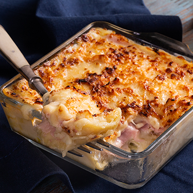

Lasanha de queijo e presunto na Air Fryer
Informações
- Dona Benta
- Produtos
- Receitas
- Livro
- Notícias
- Contato
Lasanha de queijo e presunto na Air Fryer

Ingredientes
- 350m de molho de tomates frescos
- 1 colher de sopa de orégano fresco
- 1 embalagem de Lasanha Dona Massa com Ovos Direto ao forno
- 100 g de presunto magro
- 100 g de mussarela fatiada
- 100 g de parmesão ralado
- pitada de pimenta-do-reino branca
Modo de Preparo
Em um refratário pequeno,intercale uma porção de molho de tomate,
orégano, uma folha de Lasanha Massa com Ovos Direto ao Forno Dona Benta,
presunto, queijo e tempere com uma pitadinha de pimenta do reino branca,
repetindo a operação até finalizar o volume do recipiente com o queijo mussarela.
Siga - nós em outras redes sociais